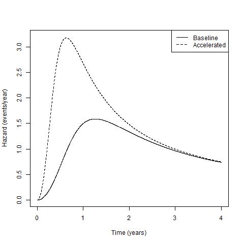

class: image <div style="position:relative; top:25px"> <center></img></center> </div> --- class: image <div style="position:relative; top:25px"> <center><img src="Figures/Dogs.jpg" width="600"></img></center> </div> ---